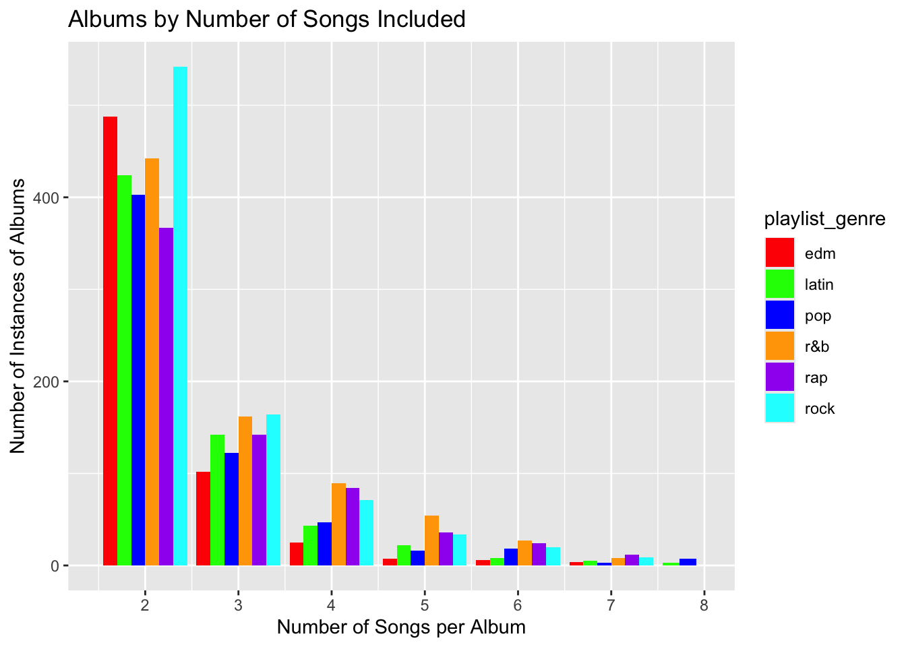

tuesdata <- tidytuesdayR::tt_load('2020-01-21')
tuesdata <- tidytuesdayR::tt_load(2020, week = 4)
spotify_songs <- tuesdata$spotify_songs
library(ggplot2)
library(stringr)
library(dplyr)Songs Text Analysis
An analysis of a dataset of songs as found on Spotify
We will be analyzing a data set of Spotify songs up to 2020. The data set source can be found at the very bottom of the page. We will be looking at trends in how many songs there is expected to be in a given album depending on genre, and will be analyzing how song titles changed over the decades. To start, we import our data.
Looking at trends of the expected number of songs per album
First, let’s take a look at the average number of songs per album. A lot of artists put up “singles”; so, in order to remove them, we filter for number of songs over 1 per album. Oftentimes, the most mainstream albums come with 7 to 12 or 13 songs per album. However, the data shows that fewer number of songs is more common for albums. The most common instance is 2 songs per album, then 3, etc.. This could be caused by smaller artists also being featured on Spotify and them having usually no restriction on a minimum amount of songs per album, or having any concern to release a bunch of songs at one time (they can just rather do this over time). We see that all genres are not too extremely off from each other in songs per album; however, we see noticeable differences. Where EDM has about 2.42 songs per album, rap has 3.15. This may possibly be caused by the more vibrant and less-lyrics based nature of EDM opposed to the lyrics-heavy nature of rap. Lack of lyrics may possibly constitute in having fewer songs in a given album as it is harder to produce unique music with the element of just electronic music and the absence of words. EDM also tends to have the highest number of covers out of any genre as it is easier to mix-match, partly due to its relative lack of lyrics and technological produce again.
avg_songs_per_album <- spotify_songs |>
group_by(playlist_genre, track_album_id) |>
summarise(songs_per_album = n()) |>
group_by(playlist_genre) |>
filter(songs_per_album > 1) |>
summarise(avg_songs_per_album = round(mean(songs_per_album), 2)) |>
arrange(avg_songs_per_album)
avg_songs_per_album# A tibble: 6 × 2
playlist_genre avg_songs_per_album
<chr> <dbl>
1 edm 2.42
2 pop 2.76
3 latin 2.82
4 rock 2.95
5 r&b 3.09
6 rap 3.16Now, let’s plot the number of songs per album and their instances detailing genres. What this graph tells us different to the data table above is the quickness in decrease of number of instances as number of songs per album increases. Expectedly, EDM, with the red bars, decreases quite fast compared to other genders as we go more right on the x-axis. Rap has quite a slower decreasing curve. Perhaps another color one might catch is orange, which constitutes to R&B, having quite a close curve to that of rap. If we look at our data table above, we see that R&B has a value that is quite close to rap, which fulfills our expectations.
songs_per_album_per_genre <- spotify_songs |>
group_by(playlist_genre, track_album_id) |>
summarise(songs_per_album = n()) |>
filter(songs_per_album > 1)
ggplot(songs_per_album_per_genre, aes(x = songs_per_album, fill = playlist_genre)) +
geom_bar(position = "dodge") +
labs(x = "Number of Songs per Album", y = "Number of Instances of Albums",
title = "Albums by Number of Songs Included") +
scale_x_continuous(limits = c(1.5, 8), breaks = 0:8) +
scale_fill_manual(values = c("red","green","blue","orange","purple","cyan"))
Looking at trends of song titles’ lengths and genericnesses over time
Now, let’s look at the length of song titles per genre. Here, we look at both a) the number of words in a song’s title by genre, b) the number of characters in a song’s title by genre. Although values are again close, we can see here that rap has both the lowest amount of words and length in terms of characters, and EDM has the highest. Using previous hypotheses, we can hypothesize that since EDM has fewer songs per album, the titles are more descriptive, the opposite for rap. Another hypothesis is since rap has a lot of words used in the song, the title should be fewer discriminating to the content, therefore more general, resulting in a shorter title. Again, these are all hypotethical ideas.
title_lengths <- spotify_songs |>
filter(!is.na(track_name)) |>
mutate(word_count = str_count(track_name, "\\w+"), title_charlength = str_length(str_extract_all(track_name,"\\w+"))) |>
group_by(playlist_genre) |>
summarise(avg_word_count = round(mean(word_count), 2), avg_title_length = round(mean(unlist(title_charlength)), 2), total_songs = n()) |>
arrange(avg_word_count)
title_lengths# A tibble: 6 × 4
playlist_genre avg_word_count avg_title_length total_songs
<chr> <dbl> <dbl> <int>
1 rap 2.94 24.3 5743
2 latin 3.04 25.5 5153
3 pop 3.2 26.5 5507
4 r&b 3.31 27.0 5431
5 rock 3.45 29.4 4951
6 edm 3.48 29.6 6043Looking at the number of words in songs over their release year, we can obtain the following graph for songs between 1970 and 2015. If we model with a linear regression line, we can see a stark decrease in word usage over the decades in song titles. A few reasons why this might be are the need for more unique titles as generic titles for songs have already been taken therefore the usage of more unique and concentrated words; the ease of marketing shorter titled songs; and the ease of access to songs via web-streaming and industrialization in production processes resulting in the need of fewer “refined” titles. Either way, according to the data set, the decrease in number of words over the years is evident. From the 4.0 levels in the 1970s, we reach the 3.4 words per title levels in the 2010s. I have omitted pre-1970 and 2015-2020 data due to a low number of data during those years compared to 1970-2015 dates, for the sake of working with an abundance of data.
songstemp <- spotify_songs |>
filter(!is.na(track_name) & track_name!="") |>
mutate(year = as.numeric(substr(track_album_release_date, 1,4)), word_count = str_count(track_name, "\\w+")) |>
filter(!is.na(year) & year>=1970 & year<=2015) |>
group_by(year) |>
summarise(avg_word_count = mean(word_count), total_songs = n())
ggplot(songstemp, aes(x = year, y = avg_word_count)) +
geom_point(color = "red", size = 3) +
geom_line(color = "red", size = 1) +
geom_smooth(method = "lm", color = "darkblue") +
labs(x = "Song Release Year", y = "Average Word Count in Song Title",
title = "Average Number Words in Songs vs. their Release Year (1970-2015)")Finally, let’s take a look at a generic type of song titles: where the word “the” followed by a singular random word (i.e. the song title is two words: “The __“). A famous song that immediately popped into my mind fitting this rule is”The Unforgiven” by Metallica. Let’s now search for the number of songs that fit this rule. We know from a previous data table that the average number of songs per genre is about 5000-6000. This leaves songs with the exact format of “The” and another word at around 1% over most genres. One genre standing out is Latin, which may be caused by Latin songs frequently having non-English therefore non-“The” titles.
the_songs <- spotify_songs |>
filter(!is.na(track_name)) |>
mutate(the_anyword = str_detect(tolower(track_name), "^the\\b(?=\\s\\w+$)")) |>
filter(the_anyword) |>
group_by(playlist_genre) |>
summarise(number_of_the_songs = n()) |>
arrange(number_of_the_songs)
the_songs# A tibble: 6 × 2
playlist_genre number_of_the_songs
<chr> <int>
1 latin 14
2 r&b 39
3 rap 51
4 pop 55
5 edm 59
6 rock 64Source Used
Access at: https://github.com/rfordatascience/tidytuesday/blob/main/data/2020/2020-01-21/readme.md. The source states that the data comes from Spotify’s API via the spotifyr package. Authors of the package are Charlie Thompson, Josiah Parry, Donal Phipps, and Tom Wolff. Kaylin Pavlik had a recent blogpost using the audio features to explore and classify songs. She used the spotifyr package to collect about 5000 songs from 6 main categories (EDM, Latin, Pop, R&B, Rap, & Rock) in creation of this data set. h/t to Jon Harmon & Neal Grantham.